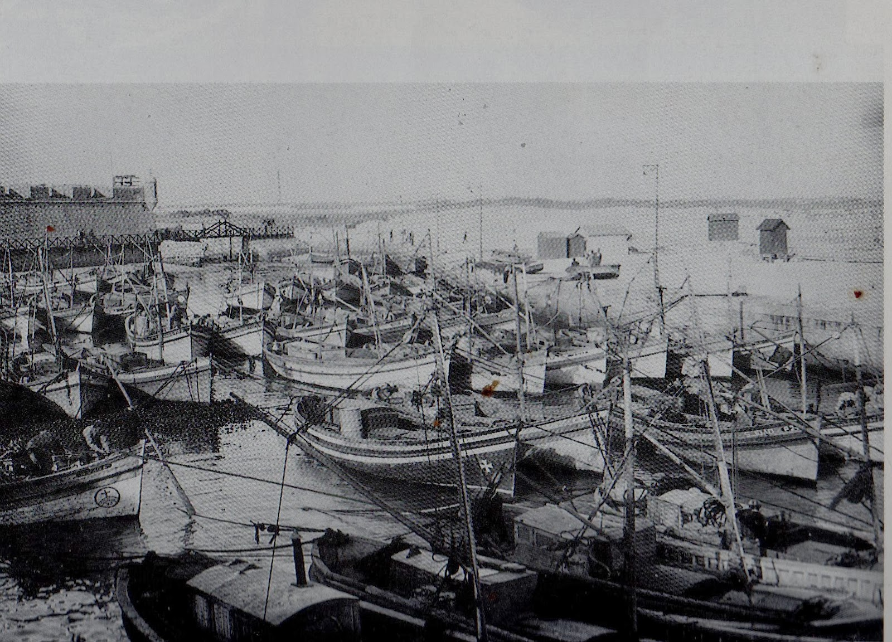

De ilha a península, uma terra de coragem.

Peniche: Uma ligação eterna com o mar.
A história de Peniche é fascinante, começando pelo facto de que, até à Idade Média, esta era uma ilha. Com o tempo e a acumulação de sedimentos, formou-se o istmo que hoje nos liga ao continente.
Desde cedo, Peniche foi um ponto estratégico de defesa e um centro nevrálgico da pesca em Portugal. A sua importância militar cresceu com a construção da Fortaleza no século XVI, essencial para proteger a costa dos ataques de piratas e invasores.
"Peniche não é apenas uma cidade; é um testemunho vivo da resiliência do povo português perante o Atlântico."
Construção das principais defesas militares para proteção da vila.
A Fortaleza serviu como prisão política, tornando-se um símbolo de resistência.
Um dos maiores portos de pesca do país e referência mundial no Surf.